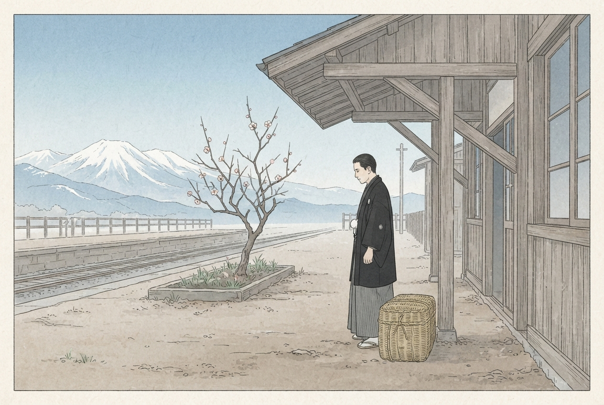

古稀庵綺譚
明治・大正・昭和のはじめ 小品集
小田原の山裾に、古稀庵という屋敷があった。主は、明治の国を作った老人のひとり。物語は、その屋敷に出入りした、名もない人たちの手もとから始まる。
大正十一年二月・小田原の駅
手拭い
興津へ発つ三好に、お園が店の手拭いを押しつける。
▶ 聴ける
大正二年三月・古稀庵の坂
坂と梅
梅の坂を自転車で下りてきた娘と、書類を抱えた若い男。
握
明治十年四月・熊本の城下
握り飯
戦のあとの城下で、豆腐屋の娘が兵隊に握り飯を差し出す。
挿絵はAIで作成しました。登場する人物の多くは架空です。
「▶ 聴ける」の話は、ボタンを押すと読み上げます。iPhoneは消音スイッチを切って、音量を上げてお聴きください。